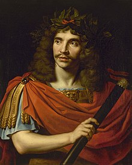

Tartuffe was written by Molière in 1664. During this time there was growth in the art of acting in France and acting was becoming more accepted by the modern culture however still at the time there was still criticism from the Catholic Church. He revised the play however it was still not accepted in society. Hundreds of years later his play was allowed to read and acted out in society. Tartuffe's orginal verion was lost in histroy however many translations and version exist today.
The play begins with the introduction of Tartuffe, who is said to be a hippocratic liar who fools everyone with his highly profound language. All the characters have suspicions about him other than Madam Parnelle and Orgon. The play walks through several encounters with Tartuffe, however things take a turn in the play when the true nature of Tartuffe is revealed.
Throughout the play we can see a recurring theme of Ego. Orgon and Madame Pernelle are so caught up in Tartuffe’s lies that they are bought into the lies of holiness that Tartuffe shows. Whether that be from the amount of wealth and class standing that they have in society however Madame Pernelle and Orgon are not willing to accept that they are wrong about Tartuffe instead they put the blame on others.
This version of Tartuffe was published by Harcourt Inc and translated by Richard Wilbur